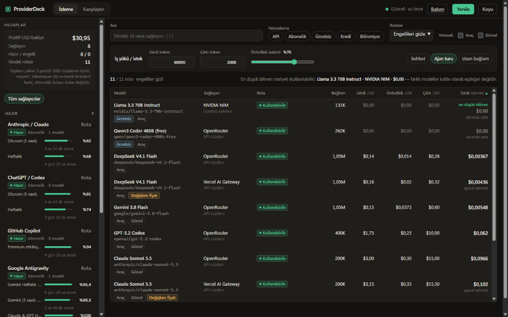

Coding quotas
See Codex and Claude Code usage in one place.
Project / AI developer tools
Track Codex quotas and OpenRouter balances in one local dashboard.

See Codex and Claude Code usage in one place.
Check supported accounts such as OpenRouter from the same dashboard.
Compare estimated costs using your expected input, cached input, and output token counts.
Run from source with Python 3.10 or later. These steps are for Windows PowerShell.
git clone https://github.com/haliltalhaertan/ProviderDeck.git
cd ProviderDeck
python -m venv .venv
.\.venv\Scripts\python.exe -m pip install -r requirements.txt
.\.venv\Scripts\python.exe launch.pyThe dashboard runs on your computer. Live refresh contacts the configured providers.